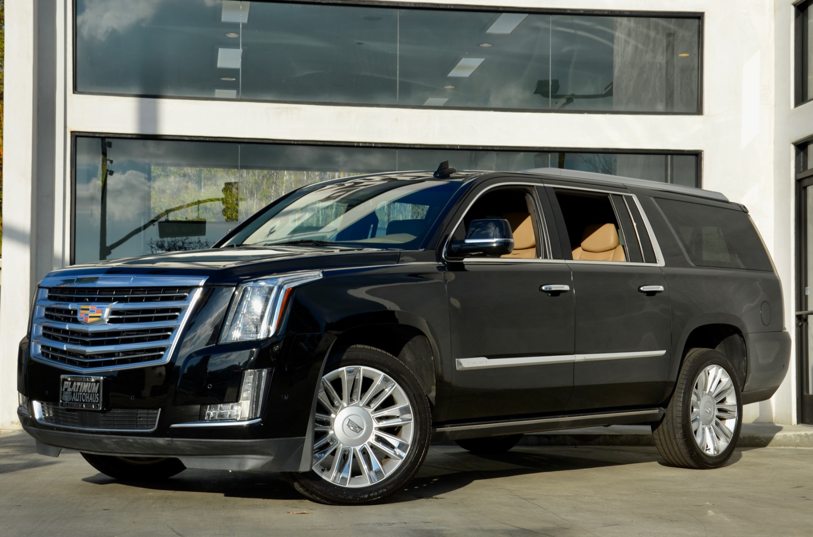

About OUR Medical Conferences
Our Medical Conferences: Advancing Healthcare Globally
Medical conferences serve as vital platforms for knowledge exchange, collaboration, and innovation within the healthcare community. These gatherings bring together healthcare professionals, researchers, educators, and policymakers from around the world.
Through presentations, workshops, and discussions, attendees explore cutting-edge research, share best practices, and address critical challenges. From ethics in nursing to clinical gerontology, these conferences shape the future of healthcare practices, ensuring better patient care and fostering global health advancements.
Ethics in Healthcare:Discussions on ethical dilemmas faced by healthcare providers, patient autonomy, informed consent, and end-of-life decisions.Exploration of bioethics, including genetic testing, organ transplantation, and emerging technologies.
Types of cars
Cadillac-Escalade:
Dynamic 6.2-liter V8 engine with Dynamic Fuel Control System 22-inch 14-spoke aluminum wheels with a glossy silver finish 38-inch curved OLED display screen Electrically adjustable 10-way driver and passenger front seats with heating feature and electric backrest control
CHEVROLET_Suburban:
Overview Introducing the 2023 Chevrolet Suburban High Country, a powerful SUV designed to take your driving experience to new heights. Equipped with a 6.2-liter V8 engine with 430 horsepower and 625 Nm of torque, this 4x4 marvel ensures unparalleled performance on any terrain.
Experience confidence in every maneuver with advanced features
 Cadillac-Escalade
CHEVROLET_Suburban
Our Customer
Below are some notable keynote speakers who have made significant contributions to Limo Mo
Largest Medical Conferences:
When: November 11th - 14th, 2024 ,Where: Düsseldorf, Germany MEDICA is a colossal event, attracting over 54,000 participants. It covers a wide spectrum of wellness, health, and fitness topics, making it a hub for healthcare professionals and industry leaders
Near the top of the road, a series of landscaped terraces with viewing platforms and cafes offer up spectacular views that tumble over craggy peaks down to the coastal plain, making this prime territory for photographers, particularly in the late afternoon when the orange-hued rocks glow.
Arab Health
When: January 27th - 30th, 2025 ,Where: Dubai, UAE, Description: Arab Health is a premier gathering for medical and pharmaceutical professionals, scoring high in terms of audience reach and international outlook. Attendees can expect cutting-edge insights and networking opportunities
International Conference on Medical and Health Science:
When: June 20th - 22nd, 2024, Where: Calgary, Canada,Description: This conference combines wellness, health, and fitness discussions with cutting-edge research. Attendees can engage in collaborative discussions, fostering progress in medical science and patient care